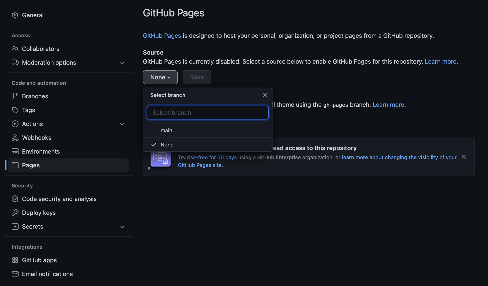
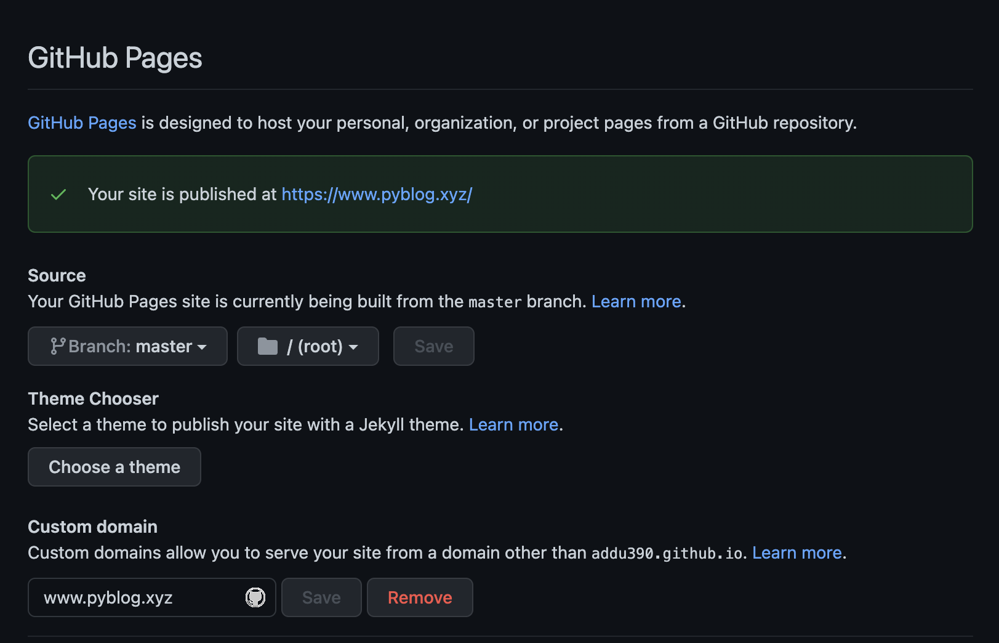
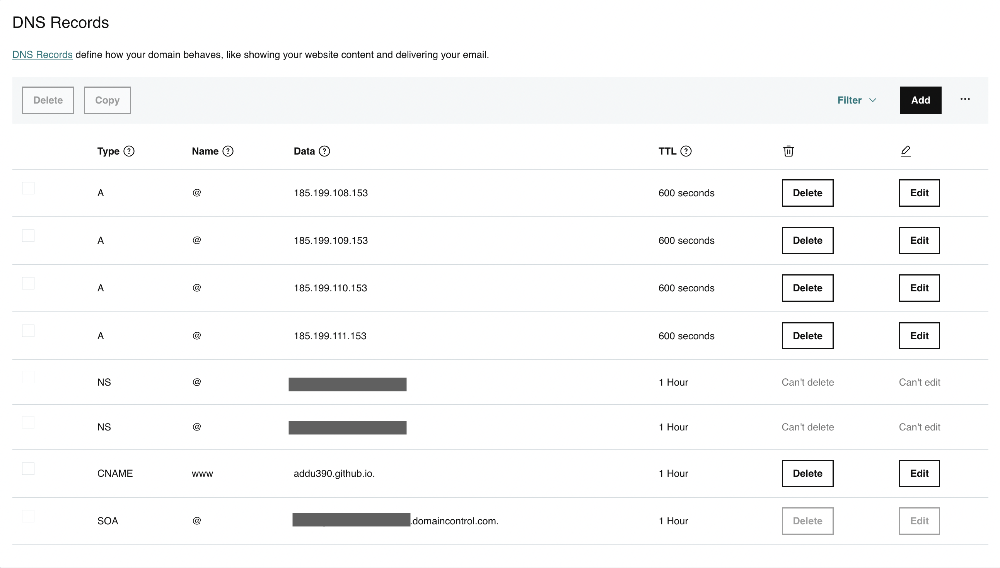
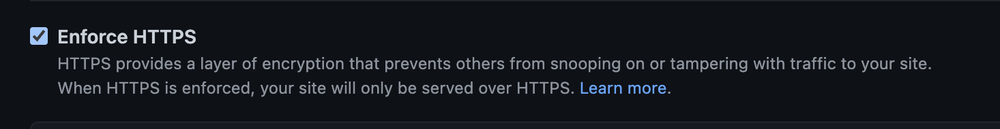

Custom domain for GitHub pages
·
Code on the Road·
#Github 2 min read
2 min read
Let's get the website up! — Drama llama.
Configuration
- Domain (example.com).
- Subdomain (www.example.com).
- HTTPS (Optional but strongly recommended).
At the end of the tutorial, you’ll have a set-up, where all requests to example.com will be redirected to https://www.example.com
Enable GitHub pages in GitHub settings
- Go to the repository → Settings ⚙️ → Pages
- Select
Source; Choosingmaster/mainbranch will treatREADME.mdas webindex.htmland choosing/docswill treat/docs/README.mdas webindex.html

Figure 1: Enable Gh Pages in GitHub Settings
- Theme Choose → Choose theme; Choose one among the default themes or clone your favorite from: jamstackthemes.dev
- Wait until GitHub publishes the website. Confirmation message:
Your site is ready to be published at example.com
Specify custom domain in GitHub settings
- Enter Custom domain: www.example.com

Figure 2: Set Custom Domain
- Note (recommended to use www.example.com):
- If the custom domain is example.com, then www.example.com will redirect to example.com
- If the custom domain is www.example.com, then example.com will redirect to www.example.com.
Manage DNS
- In the DNS provider’s console (GoDaddy in my case), create four
Arecords and oneCNAME.- In GoDaddy and a few other DNS providers, you will have to specify
@in thename(Leave in black in AWS Route 53).
- In GoDaddy and a few other DNS providers, you will have to specify
- IP addresses for four
Arecords:
185.199.108.153
185.199.109.153
185.199.110.153
185.199.111.153
Note: These can change over time, refer to the documentation
- Create a
CNAMErecord to point www.example.com to<GITHUB-USERNAME>.github.io

Figure 3: Set A and CNAME Record(s)
Confirm DNS entries
Confirm CNAME and A records by running dig www.example.com +nostats +nocomments +nocmd; It should return the four 185.x.x.x IP addresses and one CNAME with <GITHUB-USERNAME>.github.io
Note: This can take between an hour and 3 hours for the DNS entries to resolve/propagate. To verify, on the browser: https://<GITHUB-USERNAME>.github.io redirects to http://www.example.com
Enable HTTPS
The Enable HTTPS checkbox is clickable if everything goes as expected.

Figure 4: Enable HTTPS
Note:
- The checkbox takes time and is not clickable, and it can take as long as a day at times.
- After you
Enable HTTPS, once again, it can take between 1 hour to a day.
Github Support is amazing; in case it takes longer than expected, create a ticket: Github Support
That’s about it! 🚀

Cite this article as: Adesh Nalpet Adimurthy. (Mar 10, 2022). Custom domain for GitHub pages. PyBlog. https://www.pyblog.xyz/gh-page-custom-domain
 #index
#index